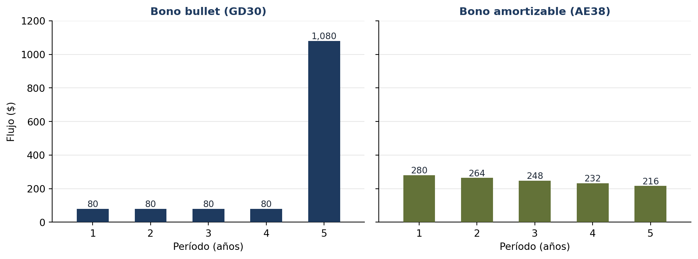

flowchart LR
C["<b>class Bono</b><br/>──────────<br/>ticker · valor_nominal<br/>tasa_cupon · anios<br/>──────────<br/>flujos() · valuar()"]
C -->|"Bono('GD30', 1000, 0.08, 5)"| O1["<b>gd30</b><br/>ticker = 'GD30'<br/>tasa_cupon = 0.08<br/>anios = 5"]
C -->|"Bono('AL30', 1000, 0.05, 7)"| O2["<b>al30</b><br/>ticker = 'AL30'<br/>tasa_cupon = 0.05<br/>anios = 7"]
C -->|"Bono('GD35', 1000, 0.07, 10)"| O3["<b>gd35</b><br/>ticker = 'GD35'<br/>tasa_cupon = 0.07<br/>anios = 10"]
classDef plantilla fill:#e0e9f4,stroke:#1e3a5f
classDef objeto fill:#eef2e3,stroke:#637238
class C plantilla
class O1,O2,O3 objeto
4 Capítulo 4: Programación Orientada a Objetos (POO)
Modelar instrumentos financieros como objetos: la clase Bono
Resumen
Un bono del mundo real tiene datos (ticker, nominal, cupón) y comportamiento (valuarse, pagar flujos). Hasta ahora en nuestro código esas dos mitades viajaban separadas: diccionarios por un lado, funciones por el otro. La POO las une en un solo objeto. Construimos la clase Bono completa —con constructor, propiedades, métodos de valuación— y la extendemos por herencia a BonoAmortizable, cerrando con composición (el Portafolio) y polimorfismo.
Introducción
Miremos el punto exacto donde quedamos al final del Capítulo 3. Para trabajar con un bono, teníamos dos piezas separadas: un diccionario con sus datos…
bono = {"ticker": "GD30", "valor_nominal": 1000, "tasa_cupon": 0.08, "anios": 5}…y funciones sueltas que operaban sobre él, a las que había que pasarles cada dato por separado: valuacion_bono(bono["valor_nominal"], bono["tasa_cupon"], tasa, bono["anios"]). Funciona, pero tiene una fragilidad estructural: nada une los datos con las funciones que saben operarlos. Cualquier parte del programa puede meter mano en el diccionario y romper un invariante (¿una tasa de cupón de -8%? ¿un diccionario al que le falta una clave?), y las funciones tienen que confiar en que el diccionario que reciben viene bien armado.
La Programación Orientada a Objetos propone otra organización: juntar en una misma entidad —el objeto— los datos y el comportamiento que les corresponde. Un objeto Bono sabe su ticker y su cupón, y sabe valuarse. Es la forma de programar que más se parece a cómo pensamos las finanzas: los instrumentos del mundo real ya son objetos — tienen propiedades y hacen cosas.
Los paradigmas, en contexto
Un paradigma de programación es un estilo general de estructurar el código. No hay uno “correcto”; hay herramientas para problemas distintos, y en este libro los vas a usar todos:
- Imperativo: secuencias de instrucciones que modifican el estado paso a paso — los bucles y acumuladores del Capítulo 2.
- Funcional: organizar el código en funciones reutilizables con entradas y salidas claras — el Capítulo 3.
- Orientado a Objetos: modelar entidades que agrupan datos y comportamiento — este capítulo.
La POO no reemplaza a los anteriores: se apoya en ellos. Adentro de cada método vas a seguir escribiendo bucles y llamando funciones.
4.1 Clases y objetos: la plantilla y sus ejemplares
Dos conceptos que conviene separar bien desde el principio:
- Clase: la plantilla (o plano, blueprint). Define qué atributos y qué métodos tendrán todos los objetos de ese tipo. Se escribe una vez.
- Objeto (o instancia): cada ejemplar concreto construido a partir de la plantilla, con sus propios valores.
La analogía financiera directa: la clase es “el concepto de bono” (todo bono tiene ticker, nominal, cupón, y sabe valuarse); los objetos son el GD30, el AL30, el GD35 — cada uno con sus números.
La Figura 4.1 lo muestra con los bonos del capítulo.
Empecemos con la clase más simple posible y una lectura línea por línea:
class Accion:
"""Una acción con su ticker y su último precio."""
def __init__(self, ticker, precio):
self.ticker = ticker # atributo: dato del objeto (sustantivo)
self.precio = precio
def actualizar_precio(self, nuevo_precio): # método: acción (verbo)
variacion = nuevo_precio / self.precio - 1
self.precio = nuevo_precio
return variacion
# Creamos dos INSTANCIAS de la misma clase: cada una con su estado propio
apple = Accion("AAPL", 175.50)
galicia = Accion("GGAL", 4200.0)
print(f"{apple.ticker}: ${apple.precio}")
print(f"{galicia.ticker}: ${galicia.precio}")
# El objeto sabe hacer cosas con sus propios datos
var = apple.actualizar_precio(180.00)
print(f"\n{apple.ticker} actualizada a ${apple.precio} ({var:+.2%})")
print(f"{galicia.ticker} sigue en ${galicia.precio} — cada objeto tiene SU estado")AAPL: $175.5
GGAL: $4200.0
AAPL actualizada a $180.0 (+2.56%)
GGAL sigue en $4200.0 — cada objeto tiene SU estadoFijate el resultado clave del final: actualizamos el precio de apple y el de galicia no se movió. Cada instancia guarda su propio estado (el conjunto de valores de sus atributos en un momento dado). Una plantilla, muchos ejemplares independientes: eso es una clase.
4.1.1 Las dos piezas con nombre raro: __init__ y self
__init__es el constructor: Python lo ejecuta automáticamente cada vez que creás una instancia (Accion("AAPL", 175.50)). Su trabajo es dejar al objeto recién nacido con todos sus atributos inicializados. Los guiones bajos dobles marcan que es un método “especial” del lenguaje.selfes la referencia al objeto concreto que está ejecutando el método. Cuando escribísapple.actualizar_precio(180), por dentro Python llamaAccion.actualizar_precio(apple, 180):selfesappleen esa llamada, yself.precioes su precio, no el de otra acción. Por eso todo método de instancia llevaselfcomo primer parámetro.
NotaEn Python, todo es un objeto
Esto no es una metáfora: un string, un entero o una lista son instancias de las clases str, int y list. Cuando escribís "aapl".upper() o precios.append(105) estás llamando métodos de un objeto, exactamente igual que apple.actualizar_precio(180). Llevás tres capítulos usando POO sin saberlo.
4.2 La clase Bono: datos + comportamiento en un solo lugar
Vamos al objeto estrella del módulo. Un bono bullet tiene datos (ticker, valor nominal, tasa de cupón, plazo) y comportamientos (generar sus flujos, valuarse a una tasa dada). En el Capítulo 2 escribiste esa lógica con bucles; en el 3 la encapsulaste en funciones; ahora los datos y la lógica se mudan juntos a una clase.
class Bono:
"""Bono bullet: paga cupón fijo anual y devuelve el nominal al vencimiento."""
def __init__(self, ticker, valor_nominal, tasa_cupon, anios):
if tasa_cupon < 0:
raise ValueError("La tasa de cupón no puede ser negativa")
self.ticker = ticker
self.valor_nominal = valor_nominal
self.tasa_cupon = tasa_cupon
self.anios = anios
@property
def cupon(self):
"""Monto del cupón anual, calculado a partir del estado del bono."""
return self.valor_nominal * self.tasa_cupon
def flujos(self):
"""Lista de flujos: cupones todos los años + nominal al final."""
pagos = [self.cupon] * self.anios
pagos[-1] = pagos[-1] + self.valor_nominal
return pagos
def valuar(self, tasa_descuento):
"""Valor presente de los flujos a la tasa dada (la lógica del Cap. 2)."""
vp = 0
for t, flujo in enumerate(self.flujos(), start=1):
vp += flujo / (1 + tasa_descuento) ** t
return vp
def __repr__(self):
return f"Bono({self.ticker}: VN ${self.valor_nominal}, cupón {self.tasa_cupon:.1%}, {self.anios} años)"
gd30 = Bono("GD30", valor_nominal=1000, tasa_cupon=0.08, anios=5)
print(gd30) # usa __repr__: el objeto se presenta solo
print(f"Cupón anual: ${gd30.cupon:,.0f}")
print(f"Flujos: {gd30.flujos()}")
print(f"Valor al 10%: ${gd30.valuar(0.10):,.2f}")
print(f"Valor al 8%: ${gd30.valuar(0.08):,.2f}")
print(f"Valor al 6%: ${gd30.valuar(0.06):,.2f}")Bono(GD30: VN $1000, cupón 8.0%, 5 años)
Cupón anual: $80
Flujos: [80.0, 80.0, 80.0, 80.0, 1080.0]
Valor al 10%: $924.18
Valor al 8%: $1,000.00
Valor al 6%: $1,084.25Leé los tres precios del final: al 10% el bono vale menos que el nominal (bajo la par), al 8% vale exactamente $1000 (a la par — la tasa de descuento coincide con el cupón), y al 6% vale más (sobre la par). Es la relación inversa precio-tasa del Capítulo 2, pero ahora el bono se valúa solo: gd30.valuar(0.10) en lugar de acordarte qué función suelta aplicarle a qué diccionario.
Tres detalles de diseño en esta clase que son marca de calidad:
- Validación en el constructor: el
raise ValueErrorimpide que exista un bono con cupón negativo. Con el diccionario, nada lo impedía — esta es la encapsulación trabajando: el objeto protege sus propios invariantes. @property: el decorador hace quecuponse use como un atributo (gd30.cupon, sin paréntesis) pero se calcule al momento a partir del estado. Si mañana cambia el nominal, el cupón se actualiza solo — no hay dos copias del dato que puedan desincronizarse.__repr__: define cómo se muestra el objeto al imprimirlo. Un minuto de trabajo que paga cada vez que hagas debugging.
TipEncapsulación: la idea de fondo
Encapsular es ocultar la cocina y exponer el menú: el usuario de la clase llama valuar(0.10) sin saber (ni importarle) que adentro hay un bucle con acumulador. Eso te da libertad para mejorar la implementación interna —mañana la vectorizás con NumPy— sin romper el código de nadie que use la clase. Las interfaces estables con interiores cambiables son lo que permite construir sistemas grandes.
4.2.1 Atributos de instancia vs. atributos de clase
Todo lo que definimos con self. es un atributo de instancia: cada objeto tiene su copia. Pero a veces hay datos compartidos por todos los objetos de la clase — y para eso existen los atributos de clase, definidos directamente en el cuerpo:
class BonoLocal:
mercado = "BYMA" # atributo de CLASE: compartido por todas las instancias
def __init__(self, ticker):
self.ticker = ticker # atributo de INSTANCIA: único de cada objeto
b1, b2 = BonoLocal("GD30"), BonoLocal("AL30")
print(f"{b1.ticker} y {b2.ticker} cotizan en {BonoLocal.mercado}")
# Si el dato compartido cambia, cambia para todos a la vez
BonoLocal.mercado = "MAE"
print(f"Ahora ambos cotizan en: {b1.mercado} / {b2.mercado}")GD30 y AL30 cotizan en BYMA
Ahora ambos cotizan en: MAE / MAEUn solo cambio (BonoLocal.mercado = "MAE") y las dos instancias lo ven — esa es la utilidad: constantes y configuración compartida viven en la clase, datos propios de cada objeto viven en la instancia.
Pero hay una sutileza que confunde a todo el mundo la primera vez: ¿qué pasa si asignás el atributo compartido a través de una instancia?
# Asignamos "a través de" b1... ¿cambia para todos?
b1.mercado = "NYSE"
print(f"b1.mercado: {b1.mercado}")
print(f"b2.mercado: {b2.mercado}")
print(f"BonoLocal.mercado: {BonoLocal.mercado}")b1.mercado: NYSE
b2.mercado: MAE
BonoLocal.mercado: MAENo cambió para todos. La asignación b1.mercado = "NYSE" no modificó el atributo de clase: creó un atributo de instancia nuevo en b1 que, a partir de ahí, tapa (hace shadowing) al de clase — solo para b1. b2 y la clase siguen en “MAE”. La regla de búsqueda de Python lo explica: al leer objeto.atributo, primero busca en la instancia y, si no está, sube a la clase. Al asignar objeto.atributo = ..., siempre escribe en la instancia. Moraleja: los atributos de clase se modifican por la clase (BonoLocal.mercado = ...), nunca por una instancia.
La Figura 4.2 dibuja esa regla. Leer y escribir no son simétricos: la lectura sube a la clase si hace falta, la escritura nunca.
flowchart TD
subgraph LEER["Leer"]
direction TB
Q0["b1.mercado"] --> Q1{"¿'mercado' está<br/>en la instancia b1?"}
Q1 -- Sí --> R1["devuelve el valor de b1"]
Q1 -- No --> Q2{"¿está en la<br/>clase BonoLocal?"}
Q2 -- Sí --> R2["devuelve el valor<br/>compartido"]
Q2 -- No --> R3["AttributeError"]
end
subgraph ESCRIBIR["Asignar"]
direction TB
W0["b1.mercado = 'NYSE'"] --> W["se escribe SIEMPRE en la instancia b1<br/>(la clase y b2 no se enteran)"]
end
classDef ok fill:#eef2e3,stroke:#637238
classDef err fill:#fde8dc,stroke:#c2410c
class R1,R2,W ok
class R3 err
b1.mercado. Al leer, busca primero en la instancia y, si no lo encuentra, sube a la clase. Al asignar, siempre escribe en la instancia: por eso b1.mercado = 'NYSE' tapa al atributo de clase solo para b1.
Esto también responde una pregunta natural: ¿da lo mismo definir un atributo en el cuerpo de la clase que dentro del __init__? No — son cosas distintas. En el cuerpo de la clase creás un atributo compartido; con self. dentro del __init__ creás un atributo por cada objeto. Para valores inmutables la diferencia puede pasar inadvertida (por el shadowing, cada asignación posterior “individualiza” el valor), pero con valores mutables es un campo minado: la trampa del atributo de clase mutable te espera en los Errores comunes.
4.3 Interacción y composición: objetos que contienen objetos
Los objetos se vuelven realmente potentes cuando colaboran. Un objeto puede recibir a otro como parámetro, o directamente contenerlo como atributo — la relación llamada composición (“tiene un”): un portafolio tiene instrumentos.
class Portafolio:
"""Un portafolio TIENE una colección de posiciones (composición)."""
def __init__(self, nombre):
self.nombre = nombre
self.posiciones = [] # lista de tuplas (instrumento, cantidad)
def agregar(self, instrumento, cantidad):
self.posiciones.append((instrumento, cantidad))
def valor_total(self, tasa_descuento):
total = 0
for instrumento, cantidad in self.posiciones:
total += instrumento.valuar(tasa_descuento) * cantidad
return total
cartera = Portafolio("Renta Fija Argentina")
cartera.agregar(Bono("GD30", 1000, 0.08, 5), cantidad=10)
cartera.agregar(Bono("AL35", 1000, 0.05, 10), cantidad=20)
print(f"Valor de '{cartera.nombre}' al 10%: ${cartera.valor_total(0.10):,.2f}")Valor de 'Renta Fija Argentina' al 10%: $23,097.28La Figura 4.3 muestra esa cadena como una conversación entre objetos, en el orden en que ocurre:
sequenceDiagram
actor U as Tu código
participant P as cartera : Portafolio
participant B1 as GD30 : Bono
participant B2 as AL35 : Bono
U->>P: valor_total(0.10)
P->>B1: valuar(0.10)
B1->>B1: flujos()
B1-->>P: 924.18
P->>B2: valuar(0.10)
B2->>B2: flujos()
B2-->>P: 692.77
P-->>U: 10 × 924.18 + 20 × 692.77
Mirá la cadena de delegación: le pedimos el valor al portafolio, el portafolio se lo pide a cada bono, y cada bono ejecuta su propio bucle de descuento. Cada clase resuelve su parte del problema y delega el resto — nadie sabe más de lo que necesita. Esta forma de partir problemas grandes en cajas chicas que colaboran es el corazón del diseño orientado a objetos.
4.4 Herencia: Bono → BonoAmortizable
La composición modela “tiene un”. La herencia modela “es un”: un bono amortizable es un bono — comparte casi todo con el bono bullet, salvo el cronograma de pagos (devuelve el capital en cuotas, no todo al final). Sería absurdo reescribir la clase entera por esa única diferencia. La herencia permite que una subclase tome todo lo de su superclase y redefina solo lo que cambia:
Antes del código, el mapa completo de las clases del capítulo (Figura 4.4). Las flechas con triángulo son herencia (“es un”); el rombo es composición (“tiene un”).
classDiagram
class Bono {
+ticker
+valor_nominal
+tasa_cupon
+anios
+cupon «property»
+flujos() list
+valuar(tasa) float
}
class BonoAmortizable {
+flujos() list «redefinido»
}
class BonoCorporativo {
+calificacion
}
class Portafolio {
+nombre
+posiciones
+agregar(instrumento, cantidad)
+valor_total(tasa) float
}
Bono <|-- BonoAmortizable : es un
Bono <|-- BonoCorporativo : es un
Portafolio o-- Bono : tiene un
BonoAmortizable y BonoCorporativo heredan de Bono (es un): reciben todo y redefinen o agregan solo lo distinto. Portafolio contiene bonos (tiene un).
class BonoAmortizable(Bono):
"""Es un Bono, pero devuelve el capital en cuotas iguales anuales."""
def flujos(self):
# Redefinimos SOLO el cronograma; valuar() se hereda intacto
amortizacion = self.valor_nominal / self.anios
pagos = []
saldo = self.valor_nominal
for _ in range(self.anios):
pagos.append(saldo * self.tasa_cupon + amortizacion) # interés sobre saldo + cuota
saldo -= amortizacion
return pagos
bullet = Bono("GD30", 1000, 0.08, 5)
amortizable = BonoAmortizable("AE38", 1000, 0.08, 5)
print("Flujos bullet: ", [round(f) for f in bullet.flujos()])
print("Flujos amortizable: ", [round(f) for f in amortizable.flujos()])
print(f"\nValor bullet al 10%: ${bullet.valuar(0.10):,.2f}")
print(f"Valor amortizable al 10%: ${amortizable.valuar(0.10):,.2f}")Flujos bullet: [80, 80, 80, 80, 1080]
Flujos amortizable: [280, 264, 248, 232, 216]
Valor bullet al 10%: $924.18
Valor amortizable al 10%: $951.63La Figura 4.5 pone los dos cronogramas lado a lado: misma tasa de cupón, mismo plazo, mismo nominal; lo único que cambia es cuándo vuelve el capital.

Compará los cronogramas: el bullet paga poco cada año y un pago gigante al final; el amortizable devuelve el capital de a partes (por eso sus cupones bajan: el interés se calcula sobre un saldo que decrece). Y ahora la observación importante: no escribimos valuar() en la subclase — se hereda de Bono y funciona perfecto, porque valuar() llama a self.flujos() y Python usa automáticamente la versión del objeto concreto. El amortizable vale más al 10% porque recupera el capital antes: menos tiempo descontando a tasa alta. La clase te acaba de enseñar duración sin nombrarla (ese concepto se formaliza en renta fija como duration).
4.4.1 super(): extender sin reescribir
Cuando la subclase necesita agregar atributos propios, usa super() para invocar al constructor del padre y no duplicar la inicialización común:
class BonoCorporativo(Bono):
"""Es un Bono, con un dato extra: la calificación crediticia."""
def __init__(self, ticker, valor_nominal, tasa_cupon, anios, calificacion):
super().__init__(ticker, valor_nominal, tasa_cupon, anios) # el padre inicializa lo común
self.calificacion = calificacion # y nosotros lo nuevo
corp = BonoCorporativo("YPF29", 1000, 0.09, 4, calificacion="B+")
print(f"{corp} — calificación {corp.calificacion}")
print(f"Valor al 12%: ${corp.valuar(0.12):,.2f}")Bono(YPF29: VN $1000, cupón 9.0%, 4 años) — calificación B+
Valor al 12%: $908.884.4.2 Polimorfismo: una interfaz, muchos comportamientos
La consecuencia más elegante de la herencia: código que opera sobre “bonos en general” sin preguntar de qué tipo es cada uno. El mismo método (valuar) ejecuta la rutina correcta según el objeto — eso es el polimorfismo:
cartera_mixta = [
Bono("GD30", 1000, 0.08, 5),
BonoAmortizable("AE38", 1000, 0.08, 5),
BonoCorporativo("YPF29", 1000, 0.09, 4, "B+"),
]
print(f"{'Instrumento':<12}{'Tipo':<20}{'Valor al 10%':>14}")
for bono in cartera_mixta:
print(f"{bono.ticker:<12}{type(bono).__name__:<20}${bono.valuar(0.10):>12,.2f}")Instrumento Tipo Valor al 10%
GD30 Bono $ 924.18
AE38 BonoAmortizable $ 951.63
YPF29 BonoCorporativo $ 968.30El bucle no tiene un solo if preguntando el tipo: le pide a cada objeto que se valúe, y cada uno usa sus flujos. Si el mes que viene agregás una clase BonoCupónCero, este bucle la valuará sin cambiar una línea. El polimorfismo es lo que hace que los sistemas orientados a objetos crezcan sin romperse.
4.5 Buenas prácticas de diseño
Tres convenciones que el ecosistema Python espera de tu código orientado a objetos:
- Nomenclatura: clases en
PascalCasey en singular (Bono,CalculadoraRiesgo); métodos y atributos ensnake_casecon verbos para las acciones (calcular_tir(),obtener_precio()). - Visibilidad por convención: un guion bajo inicial (
_saldo) señala “uso interno, no toques desde afuera”; doble guion (__clave) activa el ocultamiento fuerte de Python. No hayprivatecomo en otros lenguajes — hay acuerdos entre adultos. - Principio de Responsabilidad Única (SRP): cada clase debe tener una razón para cambiar. Si tu clase
Bonoempieza a descargar precios de internet, graficar y mandar emails, es hora de dividirla: el bono valúa, otra clase descarga, otra grafica.
Nota¿Y el destructor
__del__?
Python también tiene un método __del__ que se ejecuta cuando el objeto es eliminado de memoria por el recolector de basura. En la práctica se usa poco y conviene evitarlo: no sabés cuándo va a ejecutarse (el recolector decide), lo que lo hace poco confiable para liberar recursos importantes. Para eso, el idioma moderno es el context manager (with), que vas a ver al trabajar con archivos.
4.6 Errores comunes
AdvertenciaTrampas frecuentes
- Olvidar
self: escribirdef valuar(tasa)en lugar dedef valuar(self, tasa)produce el crípticotakes 1 positional argument but 2 were given. Python siempre pasa el objeto como primer argumento — tenés que recibirlo. - Olvidar
self.al asignar: dentro de__init__,precio = preciocrea una variable local que muere al salir del método; el atributo se crea conself.precio = precio. El síntoma:AttributeErroral usar el objeto. - Atributo de clase mutable: definir
posiciones = []a nivel de clase hace que todas las instancias compartan la misma lista — agregás un bono a una cartera y aparece en todas. Las colecciones siempre se inicializan en__init__conself.posiciones = []. - Redefinir un método y romper el contrato: si tu subclase redefine
flujos()pero devuelve otra cosa (un dict en vez de una lista), todos los métodos heredados que dependían de él (valuar) explotan. Al heredar, respetá las firmas y tipos del padre. - Herencia donde iba composición:
Portafolio(Bono)es un error conceptual — un portafolio no es un bono, tiene bonos. La pregunta “¿es un… o tiene un…?” decide entre heredar y componer.
4.7 Ejercicios Propuestos
ImportanteDesafíos de diseño
- Fondo común con composición: creá una clase
FondoComunque gestione una lista de objetosAccion, con métodos para agregar posiciones y calcular el valor total del fondo. ¿Por qué composición y no herencia? - Bono cupón cero: implementá
BonoCuponCero(Bono)que solo paga el nominal al vencimiento (redefiníflujos()). Verificá quevaluar()heredado funciona sin cambios, y comparalo con el bullet a la misma tasa. - TIR como método: agregale a la clase
Bonoun métodotir(self, precio_mercado)que encuentre la TIR por búsqueda incremental (la lógica del Capítulo 2, ahora viviendo donde corresponde). - Property con validación: convertí
preciode la claseAccionen una property con setter que rechace precios negativos (@precio.setter). Probá que asignar un precio inválido lanzaValueError. - Simulador de mercado: creá una clase
Mercadoque contenga una lista de instrumentos variados y un métodosimular_rueda()que actualice todos los precios aleatoriamente. ¿Dónde está el polimorfismo en tu diseño?